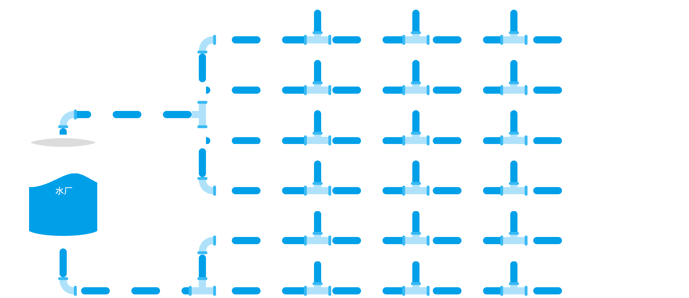
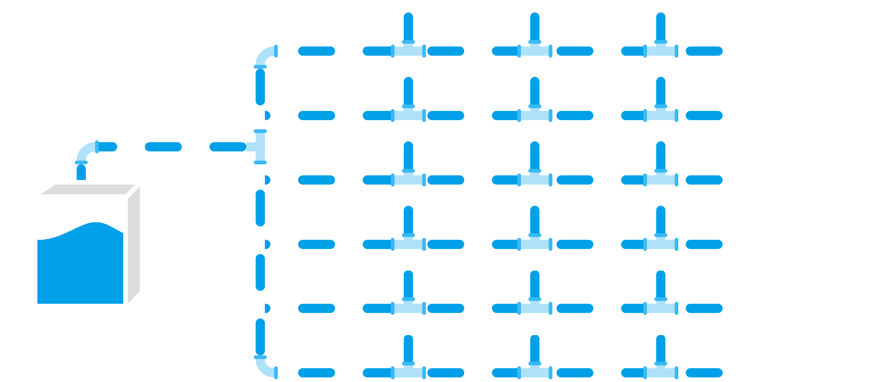

黄梅水厂 流量管控中心
当前位置：水泵房>晋梅大道>东禅路

东支管详情
流量：20
补偿值：20
漏损：20
漏水率：0%
西支管详情
流量：20
补偿值：20
漏损：20
漏水率：0%
主管详情
流量：20
补偿值：20
漏损：20
漏水率：0%
主管详情
流量：20
补偿值：20
漏损：20
漏水率：0%
北外环
黄梅大道
朝阳大道
晋梅大道
北外环
黄梅大道
西一路
建陶路
火车站
东二路
工业园
大河镇
经一路
纬一路
大众路
东禅路
鲍照路
迎宾大道
古塔东路
古塔西路
向阳桥
师范路
民营街
迎宾大道

晋梅大道详情
流量：20
补偿值：20
漏损：20
漏水率：0%
东蝉路详情
流量：20
补偿值：20
漏损：20
漏水率：0%
鲍照路详情
流量：20
补偿值：20
漏损：20
漏水率：0%
东禅路
鲍照路
迎宾大道
人民大道西路
检察院路
城乡社区
烟草路
交通局
三小路
广电局
文化公园
沙岭西路
财政局
电信公司
移动公司
红旗路
四祖路
水利局
县委
五组东路
黄梅饭店
向阳桥
电信局
建委
晋梅大道
晋梅大道详情
流量：20
补偿值：20
漏损：20
漏水率：0%
烟草路详情
流量：20
补偿值：20
漏损：20
漏水率：0%
交通局详情
流量：20
补偿值：20
漏损：20
漏水率：0%
烟草路
交通局
三小路
广电局
文化公园
沙岭路
办公大楼
职工宿舍
活动中心
指挥中心
后勤部
生活中心
教学楼
学生公寓
食堂
广电小区
广电大厦
活动中心
安居路
凤凰城
变电站
沙岭街
国税局
邮政局
东禅路